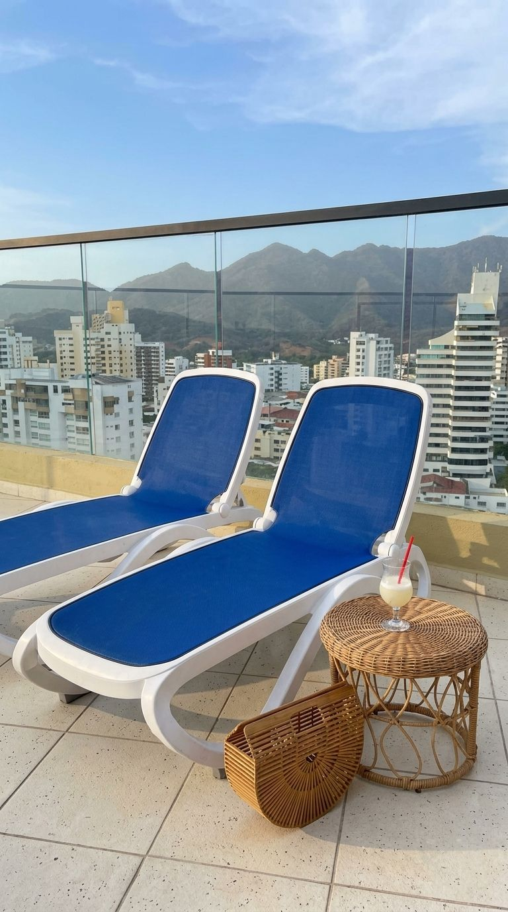

FAQ
The practical things, answered plainly.
Answers about beds, check-in, parking, and getting around El Rodadero. High-speed wifi, the lockbox code, and the exact address are sent after registration.
The apartment
Where is it, and what kind of place is it?
Santa Marta, El Rodadero, beach-view. It is a bright one-bedroom apartment on the 14th floor of a residential apartasuite building. It sleeps up to 5 guests, with 4 beds and 2 bathrooms.
How do the beds work?
Bedroom: 1 double bed and 1 single bed. Living room: 2 sofa twin beds. That is 4 beds. The setup is compact and best for families or groups comfortable sharing the space.
What is the view?
Caribbean Sea, Rodadero, and mountain views, with large windows toward the beach area, city, and mountains. Beach, city, and mountain views may vary depending on the weather, time of day, and window orientation.
What is in the kitchen and the rest of the apartment?
Refrigerator, stove, microwave, coffee maker, cookware, dishes, glasses, utensils, and cooking basics (pots and pans, oil, salt and pepper). Also a Smart TV, washing machine, air conditioning, ceiling fan, hot water, dedicated workspace, iron, hangers, shampoo, and essentials: towels, bed sheets, soap, and toilet paper.
Is there a pool?
Yes. The rooftop pool, jacuzzi, sauna, restaurant, outdoor furniture, and seating area are on the 15th floor. The pool deck looks out over El Rodadero and the Caribbean coast. A wristband is required. Follow posted schedules and capacity limits. Children must be supervised. No glass in the pool area.
Is parking free?
Yes. Free parking on the premises for 1 car. Confirm the designated entry and any building requirements before arrival. Do not park in spaces reserved for other residents or guests.
Is there a security camera?
An exterior security camera is present.
Arrival and access
How does check-in work?
About 24 hours before check-in, the building sends a WhatsApp message with a registration link. Every guest completes the form separately and receives a QR code. Show it at the front desk. After wristbands are issued, the host sends the apartment instructions. The access card is in a secure lockbox at the apartment door.
Is there a cleaning fee?
Yes. A one-time cleaning fee of 80,000 COP is added to the total for your stay.
What does the wristband cost, and can I pay cash?
18,000 COP per guest, paid directly at the front desk. No cash. It is required to enter the building and to use the pool and other shared areas.
What if someone has not registered?
Guests without registration and a wristband cannot enter the building. Security cannot allow them in. Only guests included in the reservation and registered with building security may enter or use shared amenities. No unregistered visitors. Ask for approval in advance if you expect a visitor.
When do I get the high-speed wifi password and lockbox code?
High-speed wifi network name and password are provided upon arrival. The lockbox instructions and code are sent after building registration is complete. Do not share the code or the access card with anyone who is not on the reservation.
What if the key card is lost?
Replacement costs 250,000 COP. Leave the key card in the lockbox every time you leave, unless the host gives different instructions.
How do I reach the host?
WhatsApp. Colombia: +57 311 365 6374. USA: +1 917 565 1024. Contact us with questions before arrival, help with building registration, trouble getting in, or area recommendations. For building-access issues, speak with the front desk or security. We respect your privacy and want you to feel at home.
What is the emergency number?
For police, fire, or medical assistance, call Colombia’s national emergency line: 123.
House rules
What are quiet hours, and can we have a party?
Quiet hours are 12 am to 6 am. No parties or events. Please respect neighbors, building staff, and common spaces. This is a residential apartasuite building.
Can we smoke?
No smoking inside the apartment or in any shared area of the building.
Are pets allowed?
One well-trained pet is allowed. Please provide up-to-date records. The pet must be house trained and should not be left alone for long periods. Excessive cleaning or damage caused by the pet is the guest’s responsibility and is not covered by the one-time 80,000 COP cleaning fee added to your total.
What should we do after the beach?
Wash sand off your feet before entering the building or apartment. A shirt or proper cover-up is required in all common areas. Walking through the building in only a bathing suit is not permitted.
Can we film or shoot content?
Commercial or professional photo and video shoots, brand content, influencer campaigns, and productions need written approval before booking. The request must include purpose, number of attendees, equipment list, requested spaces, and schedule. Everyone must register with building security and wear a wristband. No shoots in common areas — lobby, hallways, elevators, pool, jacuzzi, sauna, restaurant, or exterior — unless building management approves in writing. Additional fees, a security deposit, and proof of commercial liability insurance may be required.
Anything else we should not do?
Do not pour grease, coffee grounds, food scraps, or other solids down the sink. Do not leave trash in the hallway, elevator, or outside the door — bag it and use the designated trash area. Do not overload the washer, and use a reasonable amount of detergent. Do not adjust hot-water equipment before contacting the host. Turn the air conditioning off when you leave for an extended period, and keep doors and windows closed while it runs. Log out of streaming accounts before checkout. Report damage or anything that is not working as soon as possible.
When is checkout?
11 a.m. Check out at the front desk. Before leaving, turn off the air conditioning, lights, and appliances, close the windows, lock the door, return the access card to the lockbox, and message the host once you have checked out.
Getting here and around
Which buses serve Santa Marta?
Berlinas del Fonce, Marsol, and Expreso Brasilia. Berlinas has a Rodadero office, Berlinastur, on Carrera 3 near Calle 8 — about a block from the apartment, so you can walk if you travel light. Marsol and Expreso Brasilia use the Santa Marta Transportation Terminal at Calle 41 #31-17. Marsol also lists a Rodadero boarding point, so check your ticket.
How do I get from the terminal to Rodadero?
A taxi takes about 15 minutes and usually costs around 12,000 COP. Confirm the fare before leaving. After dark, take a taxi. Local buses cost about 2,300 COP per person, but they are slower and harder with luggage.
Is the neighborhood walkable?
Yes. The beach is about two blocks away. Restaurants, coffee shops, supermarkets, pharmacies, ATMs, small stores, and Gran Centro Comercial Arrecifes are within walking distance. Centro Comercial Zazue is about 10 minutes away. Taxis are easy to find, and ride-hailing apps work where available. For the historic center, Taganga, Minca, Tayrona National Park, or the airport, a taxi or private driver is usually easiest. You can also visit Playa Blanca or the aquarium.
Is Rodadero quiet?
It is a busy area, especially on weekends, holidays, and at night — families, visitors, beach vendors, and people out for dinner. That is part of the Rodadero experience. Inside the building, quiet hours are 12 am to 6 am.
Book Now
Questions answered — book your Santa Marta rental.
Still deciding? Book the El Rodadero beach-view apartment rental in Santa Marta, Colombia, or message us with dates and guest details.